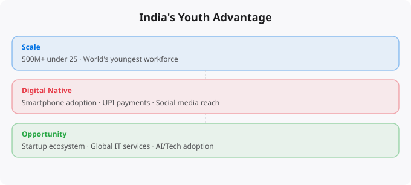

India has the largest youth population in the world. With over 600 million people under the age of 25, the country is sitting on a demographic asset that no other nation can match. But demographic advantages do not automatically translate into economic outcomes. The question is whether India's youth can convert their numbers into genuine capability, opportunity, and wealth creation — not just for themselves, but for the country.
Technology industries are uniquely driven by human capital. Unlike manufacturing, where machines do most of the production, or resource extraction, where geography determines output, technology is primarily a knowledge industry. What you know, how fast you learn, and how effectively you can solve problems determine what you can produce and what you earn. This means a country with large numbers of young, educated, English-speaking people has a structural advantage in the global tech economy. India has all three factors at scale. The English language proficiency is particularly important — it allows Indian engineers to work with global clients, contribute to international open source projects, and communicate in the language that dominates global business and technology.
The IT services model has been tremendously successful, but it has a structural limitation: it sells time and labor rather than intellectual property and products. The margins are lower, the value capture is limited, and the dependency on client decisions creates volatility. The more important and exciting trend is the shift toward Indian companies building products and platforms that serve global markets. Zerodha, Freshworks, Razorpay, CRED, Zoho — these companies built products that compete with global players. Freshworks became the first Indian SaaS company to list on Nasdaq. Zoho serves hundreds of thousands of businesses around the world.
This shift from services to products is where India's youth advantage becomes most powerful. Building products requires creativity, deep technical skill, and entrepreneurial thinking — all things that a young, hungry, well-educated population can provide. And the cost structure advantage means Indian product companies can build and iterate faster than competitors from higher-cost countries.
An honest assessment of India's youth advantage has to acknowledge a difficult truth: the formal education system produces enormous variation in quality. IITs, IIITs, and a handful of other strong engineering colleges produce genuinely world-class graduates. But the vast majority of engineering graduates from tier-2 and tier-3 colleges graduate with theoretical knowledge but limited practical skills. This gap is solvable. Online learning platforms, YouTube channels, open source projects, cloud provider free tiers, and communities of practice have democratized access to high-quality technical education in a way that was impossible a decade ago.
A motivated student in a small city who cannot afford IIT coaching can today access MIT OpenCourseWare, excellent Python tutorials on YouTube, free cloud accounts from AWS and GCP, GitHub for building and sharing projects, and communities like Stack Overflow where questions get answered by engineers from around the world. The barrier to becoming a skilled technologist has never been lower in India's history. What this means is that the advantage increasingly goes to those who are motivated and consistent — not just those who were born in the right city or could afford the right coaching classes.
The COVID-19 pandemic forced a global experiment in remote work, and the results were clear: knowledge work — including software development, data science, and design — can be done effectively from anywhere with a good internet connection. For Indian youth, this is a structural shift of enormous importance. Before remote work became mainstream, an Indian engineer who wanted to earn at global rates had to either get a visa and physically relocate, or join a large IT services company. Now, a skilled Indian developer can be hired directly by a US startup, a European company, or an Australian firm, work from Pune or Jaipur, and earn compensation approaching global rates.
Given this context, here are the most important things for India's youth to focus on to actually capture this opportunity. First, genuine skill building over credential chasing. The credential inflation in India — where everyone has an engineering degree but many lack practical skills — means that actual demonstrated capability stands out dramatically. Build real projects. Contribute to open source. Write a technical blog. Create a portfolio that shows what you can do.
Second, communication skills matter as much as technical skills. The ability to clearly explain your thinking, write well in English, and participate in technical discussions determines whether your technical ability is legible to international opportunities. Third, think in global terms from the beginning. The options available to skilled Indian technologists are genuinely global. And finally, financial literacy alongside technical literacy — understanding how to invest and build wealth over time compounds over a lifetime just as much as technical skills do.
India's youth advantage is not a guarantee of anything. Demographic dividends are only realized when societies invest in education, infrastructure, and opportunity structures that allow people to develop and apply their capabilities. For the individual, recognize that you are operating in a moment of genuine opportunity, that the tools for skill development have never been more accessible, and that the decisions you make in your twenties about what to learn, what to build, and how to think will compound in ways that are difficult to imagine but very real.
← Back to BlogThe concepts covered in this article form part of a larger body of knowledge that compounds as you build on it. Real understanding comes not from reading alone, but from applying these ideas in practice — building projects, making mistakes, debugging problems, and iterating. Every concept here is a doorway to a deeper topic worth exploring further. The most effective way to move forward is to pick one idea that resonated most and go deeper: find a hands-on exercise, build something small that uses the concept, or teach it to someone else. Teaching is one of the most powerful learning techniques — explaining a concept clearly reveals exactly where your own understanding has gaps.
Technology learning is a long game. The professionals who build the most capability over time are not those who learn the fastest in any single week, but those who learn consistently over years. Building a daily habit of reading, practicing, and building — even just 30 to 60 minutes a day — compounds dramatically. The journey from beginner to professional is measured in years, not weeks, but the direction matters more than the speed. Keep moving forward.
Reading about markets is not investing. Understanding market theory is not making money. The gap between knowledge and results in investing is filled by the practice of forming independent views, testing them against reality, and updating your thinking when evidence contradicts your expectations.
Developing a genuine market view requires: choosing 2-3 indicators to follow consistently rather than tracking dozens superficially, reading primary sources (earnings reports, central bank statements, economic data releases) rather than just media commentary, maintaining an investment journal where you record your reasoning when making decisions, and reviewing that reasoning 6-12 months later to understand where your thinking was right or wrong.
Weekly routine (30 minutes):
Monday: Review portfolio performance vs benchmark
Tuesday: Read one company annual report (if stock investor)
Wednesday: Check economic calendar for key data releases
Thursday: Review Fed/RBI communications from that week
Friday: Journal -- what happened this week vs expectations?
Monthly routine (2 hours):
Review asset allocation vs targets
Rebalance if any asset class drifted more than 5%
Read one investment book chapter or whitepaper
Review all open positions and thesis validity
Quarterly routine (4 hours):
Portfolio review: what worked, what did not, why?
Tax optimization check
Update financial goals
Read one earnings season summary for key companiesMarkets in liquid, public securities are highly efficient at incorporating publicly available information. Reading the same Bloomberg article, watching the same CNBC segment, and following the same analysts as millions of other investors does not give you an informational edge. By the time you read it, the market has likely already priced it in.
Where individual investors can have a genuine edge: patience (most institutional investors face quarterly performance pressure that prevents holding through temporary weakness), sector expertise (knowing an industry deeply as a practitioner gives real insight), tax efficiency (individual investors can optimise for after-tax returns in ways institutions cannot), and behavior (simply not panic selling during drawdowns outperforms most active strategies).
Beginners think about investing as picking the stocks that will go up the most. Experienced investors think about risk management first -- ensuring that mistakes do not destroy the portfolio's ability to recover and compound. The most important risk management principles: never invest money you will need within 5 years, diversify across asset classes and geographies, avoid leverage (borrowed money amplifies both gains and losses), and size positions so that being completely wrong on any single investment does not materially damage the portfolio.
Standard financial planning guidance: build a 3-6 month emergency fund first. Then invest 10-20% of gross income, increasing toward 20%+ as income grows. For aggressive wealth building, aim for a 30-40% savings rate. Invest consistently regardless of market conditions -- time in the market beats timing the market.
Investing is deploying capital for long periods (years to decades) based on fundamental value creation. Trading is buying and selling over shorter timeframes based on price movements. Most retail investors who attempt trading underperform a simple index fund. Investing in low-cost index funds consistently outperforms most active strategies over 10+ year periods.
Start with NIFTY 50 or NIFTY 500 index funds via SIP (Systematic Investment Plan) through any major AMC or broker. Index funds provide diversification, low costs, and performance that matches the market. Add direct equity only after you have at least 6-12 months of investing experience and genuine time to research individual companies.